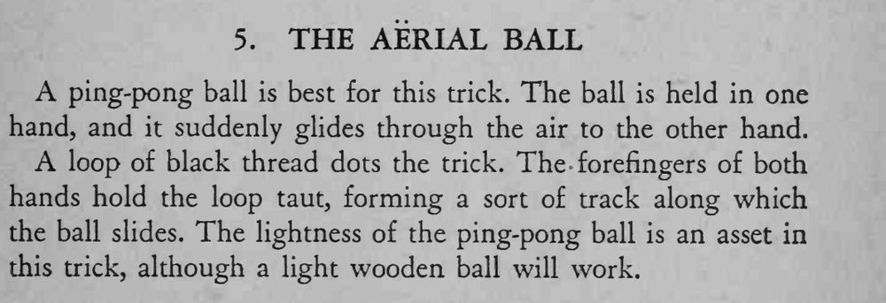

一只手拿着的球忽然离手，像滑翔一样在空中飞过去，落入另一只手。
乒乓球越轻越好，细线要绷直，球滑过去才不会半路停住。

A ping-pong ball is best for this trick. The ball is held in one hand, and it suddenly glides through the air to the other hand. A loop of black thread dots the trick. The forefingers of both hands hold the loop taut, forming a sort of track along which the ball slides. The lightness of the ping-pong ball is an asset in this trick, although a light wooden ball will work.